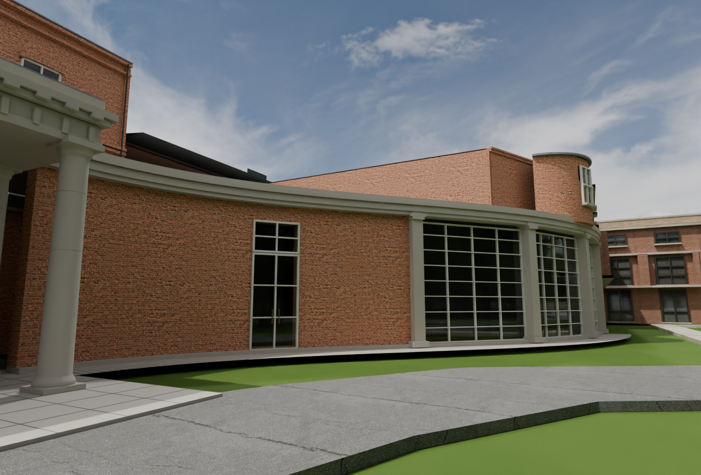
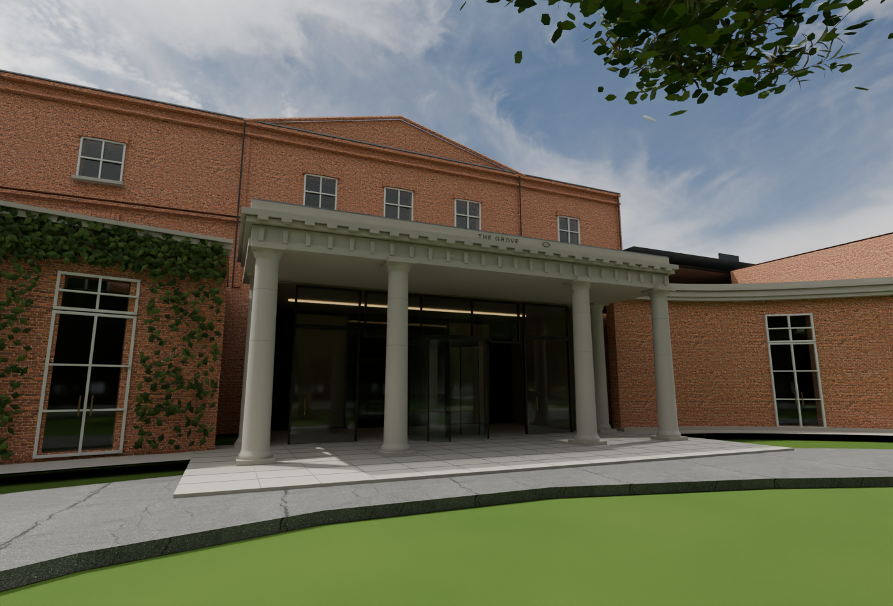
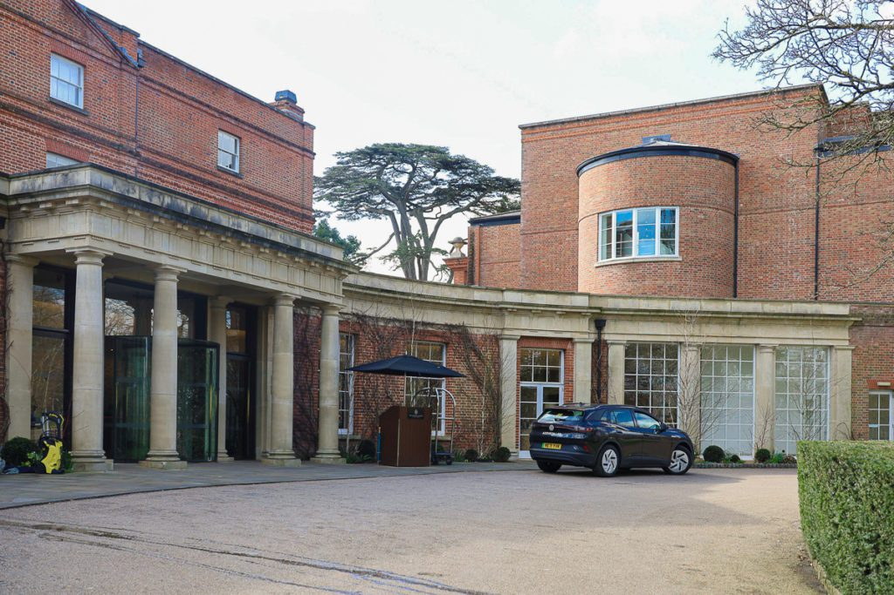

V26 follows the curve shown in your photograph. The window bays and shallow stone supports sit along the frontage, replacing the projecting row. Dimensions remain photo estimates.
Explore the corrected return in 3D



Earlier V25 entrance and estate renders — those reception images predate this correction. Amber is unchanged.